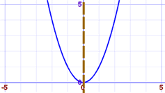
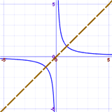

Symmetry in Equations
Equations can have symmetry:

Graph of x2
Symmetry about y-axis

Graph of 1/x
Diagonal symmetry
In other words, there is a mirror-image.
Benefits
The benefits of finding symmetry in an equation are:
- we understand the equation better
- it is easier to plot
- it can be easier to solve. When we find a solution on one side, we can then say "also, by symmetry, the (mirrored value)"
How to Check For Symmetry
We can often see symmetry visually, but to be really sure we should check a simple fact:
Is the equation unchanged when using symmetric values?
How we do this depends on the type of symmetry:
For Symmetry About Y-Axis
For symmetry with respect to the Y-Axis, check to see if the equation is the same when we replace x with −x:
Example: is y = x2 symmetric about the y-axis?
Try to replace x with −x:
y = (−x)2
Since (−x)2 = x2 (multiplying a negative times a negative gives a positive), there is no change
So y = x2 is symmetric about the y-axis
For Symmetry About X-Axis
Use the same idea as for the Y-Axis, but try replacing y with −y.
Example: is y = x3 symmetric about the x-axis?
Try to replace y with −y:
−y = x3
Now try to get the original equation:
Try multiplying both sides by −1:
y = −x3
It is different.
So y = x3 is not symmetric about the y-axis
Diagonal Symmetry
Try swapping y and x (i.e. replace both y with x and x with y).
Example: does y = 1/x have Diagonal Symmetry?
Start with:
y = 1/x
Try swapping y with x:
x = 1/y
Now rearrange that: multiply both sides by y:
xy = 1
Then divide both sides by x:
y = 1/x
And we have the original equation. They are the same.
So y = 1/x has Diagonal Symmetry
Origin Symmetry

Origin Symmetry is when every part has a matching part:
- the same distance from the central point
- but in the opposite direction.
Check to see if the equation is the same when we replace both x with −x and y with −y.
Example: does y = 1/x have Origin Symmetry?
Start with:
y = 1/x
Replace x with −x and y with −y:
(−y) = 1/(−x)
Multiply both sides by −1:
y = 1/x
And we have the original equation.
So y = 1/x has Origin Symmetry
Amazing! y = 1/x has origin symmetry as well as diagonal symmetry!